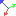
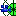

3D controls
The camera can be controled with a number of different control schemes; select the one you're most intuitively familiar with.
Contents
Toolbar
The following toolbar appears in several different editors where the movement of objects and cameras in three dimensions is possible. Buttons 1-4 control how the selected object can be moved, and buttons 5 and 6 control how the camera moves relative to the selected object.
{kind=link}
- Standard selection - Keyboard shortcut "r". If the "Allow Movement in Standard Mode" option is off, only options can be edited while in standard mode. If the option is on, then objects can be moved in standard mode in a manner similar to in 3 axis movement mode.
- Axis movement - Keyboard shortcut "q". When an object is selected the 3-axis movement control is displayed on top of the object. By click-dragging an axis the object will move only on that axis. The corners of the 3-axis control can also be dragged — this will move the object on 2 axes at the same time.
- 3 Axis rotation - Keyboard shortcut "e". This will display the 3-axis rotation control. The circles displayed represent the yaw, pitch and roll. By click-dragging along these circles the object will rotate in the desired direction.

Local coordinates - Keyboard shortcut "t". When local coordinates are active the movement and rotation commands will use the selected object's reference frame. For example, you could move the object "forward" along one axis and it will move in the direction that it's pointing in.
Set camera to object style - camera rotates around the selected object- Set camera to camera style - camera rotates "in place"
{kind=link}
{kind=link}
{kind=link}
{kind=link}
{kind=link}
{kind=link}
Mouse Control
There are three options available for mouse controls, and the method of mouse control can be set differently for the Area editor and the Cutscene editor. To switch between them open the Options window (from the Tools menu). There will be options for mouse control style in the Cutscene Editor portion, the Area editor portion, and the Material Editor portion.
The VfX editor currently only uses the 3DSMax style.
Windows standard
| ALT + Left-click (hold) | slide horizontally & vertically |
| ALT + Right-click (hold) | increase/decrease pitch & rotation |
| Mousewheel up/down | zoom in/out |
NWN-Style
| CTRL + Left-click (hold) | slide horizontally & vertically |
| CTRL + Right-click (hold) | increase/decrease pitch & rotation |
| Middle-click (hold) | increase/decrease pitch & rotation |
| Mousewheel up/down | zoom in/out |
3DSMax Style
| Middle-click (hold) | slide horizontally & vertically |
| CTRL + Middle-click (hold) | slide horizontally & vertically (quick) |
| ALT + Middle-click (hold) | increase/decrease pitch & rotation |
| Mousewheel up/down | zoom in/out |
Additional notes
In a level editor camara movement speed in flycam mode can be controlled by holding down a left CTRL and using a mouse wheel.
Number Pad Controls
These keyboard controls are the same regardless of which mouse control method is used.
| Key | Effect |
|---|---|
| 1 | decrease pitch |
| 2 | move forward |
| 3 | increase pitch |
| 4 | roll counter-clockwise |
| 5 | reorient to default view |
| 6 | roll clockwise |
| 7 | rotate left |
| 8 | move backward |
| 9 | rotate right |
| + | zoom in |
| - | zoom out |
Moving objects
Moving objects (creatures, placeables, etc.) that have been placed within an area is done in both the area editor and the cutscene editor. By using keyboard modifiers objects can be rotated on each axis. The exact method differs between NWN-style and 3DSMax-style mouse control methods.
| Left-click (hold) | Moves object on x/y axis | |
| ALT Left-click (hold) | Moves object on z axis (up/down) | |
| SHIFT Right-click (hold) | Changes yaw (turns left/right) | |
| SHIFT-CTRL Right-click (hold) | Changes pitch | |
| SHIFT-ALT Right-click (hold) | Changes roll |
| Left-click (hold) | Moves object on x/y axis | |
| SHIFT Left-click (hold) | Moves object on z axis (up/down) | |
| ALT Left-click (hold) | Changes yaw (turns left/right) | |
| ALT-CTRL Left-click (hold) | Changes pitch | |
| ALT-SHIFT Left-click (hold) | Changes roll |
Changing control schemes
Camera control schemes are defined for each editor in the file DefaultSettings.xml, which is located in the Dragon Age\Toolset directory.
For example, the level editor's camera controls can be found within the tags
<LevelEditorRenderWnd> ... </LevelEditorRenderWnd>
You can also find the schemes for the generic "Windows", "3DSMax" and "NWN" styles within the tags:
<Windows> <WindowsCamera> <Threedsmax> <ThreedsmaxCamera> <NWN> <NWNCamera>
Look for the <CameraToolSet> tag within these tags. They will contain tags for some of the following camera movement functions:
- MoveCamera
- ZoomCamera
- RotateObjectsPitchUp
- RotateObjectsRollRight
- RotateCameraOrbOrFly
- RotateCameraOrbOrFly_2
- RotateObjectsYawLeft
- RotateObjectsYawLeft_2
- RotateObjectsYawLeft_3
- MoveCameraAround
- MoveCameraFly
- RollCamera
- RotateCameraFly
These tags will have a "Chord" attribute that indicates what combination of mouse button and keypress causes the camera to respond in that tag's designated way. For example:
<RotateCameraOrbOrFly Function="RotateCameraOrbOrFly" Chord="RMB+Ctrl"/>
Causes the camera to enter "RotateCameraOrbOrFly" mode when the right mouse button and the control key are held down.
There is also the optional attribute "IgnoreChord".